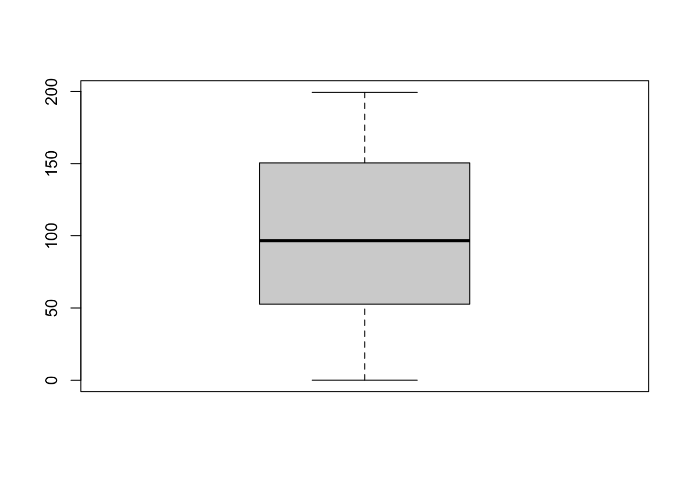

x = runif(n = 1000, min = 0, max = 200)
boxplot(x)
Faking data is very useful for populating test databases. In fact, the script below was used to generate the example data with the tables customers, orders, suppliers and products used on this website.
from faker import Faker
import pandas as pd
import random
fake = Faker()
# Generating customers
num_customers = 300
customers = []
for _ in range(num_customers):
customers.append({
'customer_id': fake.uuid4(),
'customer_name': fake.name(),
'email': fake.email(),
'phone_number': fake.phone_number(),
'address': fake.address()
})
# Generating suppliers
num_suppliers = 12
suppliers = []
for _ in range(num_suppliers):
suppliers.append({
'supplier_id': fake.uuid4(),
'supplier_name': fake.company(),
'supplier_email': fake.company_email(),
'phone_number': fake.phone_number(),
'address': fake.address()
})
# Generating products
num_products = 30
products = []
for i in range(num_products):
products.append({
'product_id': i + 1,
'product_name': fake.word(),
'product_description': fake.text(),
'price': round(random.uniform(10, 1000), 2),
'supplier_id': random.choice(suppliers)['supplier_id']
})
# Generating orders
num_orders = 500
orders = []
for _ in range(num_orders):
customer = random.choice(customers)
order = {
'order_id': fake.uuid4(),
'customer_id': customer['customer_id'],
'product_id': random.choice(products)['product_id'],
'quantity': random.randint(1, 5),
'order_date': fake.date_this_year(),
'delivery_date': fake.date_between(start_date='today', end_date='+30d')
}
orders.append(order)
# Creating DataFrames
customers_df = pd.DataFrame(customers)
suppliers_df = pd.DataFrame(suppliers)
products_df = pd.DataFrame(products)
orders_df = pd.DataFrame(orders)
# Saving to Excel file
with pd.ExcelWriter('db.xlsx', engine='openpyxl') as writer:
customers_df.to_excel(writer, sheet_name='Customers', index=False)
suppliers_df.to_excel(writer, sheet_name='Suppliers', index=False)
products_df.to_excel(writer, sheet_name='Products', index=False)
orders_df.to_excel(writer, sheet_name='Orders', index=False)
# Create an SQLite database and establish connection
conn = sqlite3.connect('db.sqlite')
cursor = conn.cursor()
# Create tables
cursor.execute('''
CREATE TABLE Customers (
customer_id TEXT PRIMARY KEY,
customer_name TEXT,
email TEXT,
phone_number TEXT,
address TEXT
)
''')
cursor.execute('''
CREATE TABLE Suppliers (
supplier_id TEXT PRIMARY KEY,
supplier_name TEXT,
supplier_email TEXT,
phone_number TEXT,
address TEXT
)
''')
cursor.execute('''
CREATE TABLE Products (
product_id INTEGER PRIMARY KEY,
product_name TEXT,
product_description TEXT,
price REAL,
supplier_id TEXT,
FOREIGN KEY(supplier_id) REFERENCES Suppliers(supplier_id)
)
''')
cursor.execute('''
CREATE TABLE Orders (
order_id TEXT PRIMARY KEY,
customer_id TEXT,
product_id INTEGER,
quantity INTEGER,
order_date TEXT,
delivery_date TEXT,
FOREIGN KEY(customer_id) REFERENCES Customers(customer_id),
FOREIGN KEY(product_id) REFERENCES Products(product_id)
)
''')
# Insert data into tables
cursor.executemany('''
INSERT INTO Customers (customer_id, customer_name, email, phone_number, address)
VALUES (:customer_id, :customer_name, :email, :phone_number, :address)
''', customers)
cursor.executemany('''
INSERT INTO Suppliers (supplier_id, supplier_name, supplier_email, phone_number, address)
VALUES (:supplier_id, :supplier_name, :supplier_email, :phone_number, :address)
''', suppliers)
cursor.executemany('''
INSERT INTO Products (product_id, product_name, product_description, price, supplier_id)
VALUES (:product_id, :product_name, :product_description, :price, :supplier_id)
''', products)
cursor.executemany('''
INSERT INTO Orders (order_id, customer_id, product_id, quantity, order_date, delivery_date)
VALUES (:order_id, :customer_id, :product_id, :quantity, :order_date, :delivery_date)
''', orders)
# Commit changes and close connection
conn.commit()
conn.close()